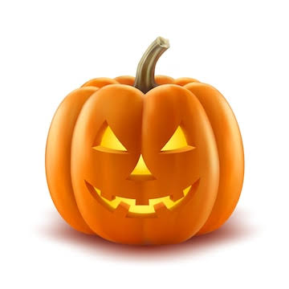

The Jack-O'-Lantern

Origins of the Jack-O'-Lantern
The tradition of carving pumpkins originated from an Irish myth about a man named Stingy Jack. Jack tricked the Devil and was doomed to roam the earth with only a carved turnip lantern to guide him.
How to Carve a Pumpkin
Choose a fresh pumpkin, draw your design, cut the top off, scoop out the seeds, carve your pattern carefully, and place a candle inside to bring your creation to life!